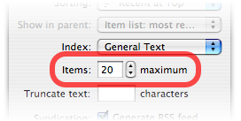
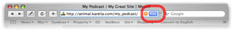

RSS
RSS feeds are becoming an increasingly popular method for delivering content over the Internet today. You'll be pleased to know that Sandvox has great RSS support built right in.
What is an RSS Feed?
Typically, when browsing the Internet, you visit a website and have a look at its content to see if anything interests you. But let's say you like this site a lot and tend to visit it regularly to see if anything new has appeared. And what if there are several sites like this?
The end result is that you find yourself regularly visiting a sizeable quantity of sites, quickly scanning them for anything new, and then closing them again. RSS feeds offer an alternative to this.
An RSS feed is basically a simple, easy-to-read list of the most recent items from a website. To view the list, you also need an RSS feed reader. Some of the more popular applications available for the Mac are:
- NetNewsWire
- NewsFire
- Shrook
- Vienna
- Safari 2.0 and higher also features basic RSS support
An RSS feed reader regularly downloads the RSS feeds for all the websites you provide it with, and looks to see if there is anything new. When it does find something new, the application notes the address of this new item, and alerts you to its presence. You are then free to look through these new items at your leisure and visit those that interest you.
For more in depth information on RSS feeds, you may be interested in this article.
Sandvox's Support of RSS Feeds
Sandvox supports RSS feeds in two different ways. You can use an existing RSS feed from another site to provide the data for an RSS Feed page or pagelet:
Or, Sandvox can generate an RSS feed from a Collection in your site, which visitors can then subscribe to:
The rest of this article deals solely with the process of generating an RSS feed from a Collection.
Creating a Feed with Sandvox
Setting Sandvox to create an RSS feed is very easy. If the Collection you want to generate the feed from is a Blog or Photo Album, it is already set up.
To generate an RSS feed from a Collection:
- Select the Collection in the Site Outline. (Don't forget that the Home Page is a Collection as well.)
- Open the Page Inspector.
- Expand the "Collection" settings at the bottom of the Inspector.
-
Check the "Generate RSS feed" box.

Sandvox will generate a standard RSS feed for the Collection. The feed lists all the pages which appear in the Collection's Index. You can adjust how many pages this is using the "Items" setting in the Page Inspector:

Also contained in the feed is the content of each page. The order of the pages in the RSS feed is always chronological, with the most recent pages first.
Subscribing to a Sandvox RSS Feed
Of course having added an RSS feed to your site, you want visitors to be able to make use of it!
Most modern web browsers feature automatic detection of any RSS feed's associated with a webpage. Some of the more popular web browsers that support this feature are:
- Safari 2.0 and later
- Firefox
- Internet Explorer 7 and later
- Opera 8.0 and higher
To view an page's RSS feed with Safari 2.0:
-
Open the webpage in Safari. A small "RSS" symbol should appear in the Address Bar to signify the presence of an RSS feed:
 - Click the "RSS" symbol to view the feed. It will open within Safari or your preferred RSS reader.
Although these instructions apply only to Safari, they are pretty similar for all RSS-capable web browsers.
To make life easier, you can also add an RSS Badge to help visitors discover the feed. Also, most dedicated RSS reader applications have built-in support for detecting the feeds available on a website.